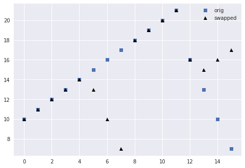
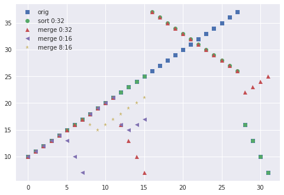
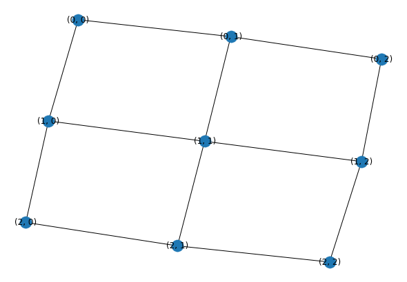
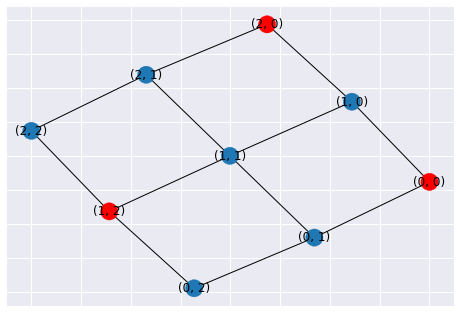
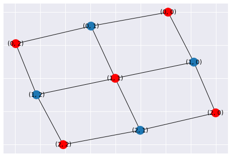
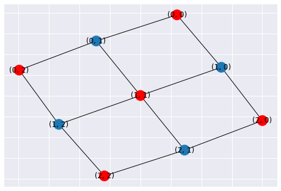
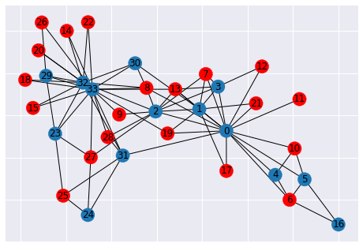

%matplotlib inline
import matplotlib.pyplot as plt
import pandas
import numpy as np
import itertools
plt.style.use('seaborn')
Bitonic sorting
Definition: bitonic sequence
A bitonic sequence of length $n$ satisfies $$ x_0 \le x_1 \le \dotsb \le xk \ge x{k+1} \ge \dotsb \ge x_{n-1} $$ or a cyclic shift thereof, $$\hat xi = x{i+c \bmod n} .$$
sorting relies on the bitonic swapping operation,
def bitonic_split(x):
L = len(x) // 2
for i in range(L): # each pair is independent
if (x[i] > x[L + i]):
x[i], x[L + i] = x[L + i], x[i]
after which the resulting subsequences x[:L] and x[L:] are bitonic and max(x[:L]) <= min(x[L:]). (It is beyond the scope of this class to formally prove this property, but we’ll show examples.)
Example
x = list(range(10, 22)) + [16, 13, 10, 7]
idx = np.arange(len(x))
plt.plot(x, 's', label='orig')
bitonic_split(x)
plt.plot(x, '^k', label='swapped')
plt.legend();

Note that the bitonic sequence on the right side is cyclicly permuted.
Putting it together

- The blue blocks are forward bitonic merge networks, consisting of
bitonic_splitfollowed by recursive splits. - The green blocks are reverse networks.
- The left half of the diagram constructs a global bitonic sequence that is increasing in the top half and decreasing in the bottom half. This bitonic sequence is balanced and not “shifted”.
- The right half of the diagram merges a global bitonic sequence. The bitonic sequences produced in each stage of the merge may be unbalanced and/or cyclicly shifted.
Demo
def bitonic_sort(up, x, start=0, end=None, plot=[]):
if end is None:
end = len(x)
if end - start <= 1:
return
mid = start + (end - start) // 2
bitonic_sort(True, x, start, mid)
bitonic_sort(False, x, mid, end)
if (start, end) in plot:
bitonic_plot(x, start, end, 'sort')
bitonic_merge(up, x, start, end, plot=plot)
def bitonic_merge(up, x, start, end, plot=False):
# assume input x is bitonic, and sorted list is returned
if end - start == 1:
return
bitonic_split2(up, x, start, end)
if (start, end) in plot:
bitonic_plot(x, start, end, 'merge')
mid = start + (end - start) // 2
bitonic_merge(up, x, start, mid, plot=plot)
bitonic_merge(up, x, mid, end, plot=plot)
def bitonic_split2(up, x, start, end):
L = (end - start) // 2
for i in range(start, start + L):
if (x[i] > x[L + i]) == up:
x[i], x[L + i] = x[L + i], x[i] # swap
def bitonic_plot(x, start, end, phase):
plt.plot(range(start, end), x[start:end], next(marker), label=f'{phase} {start}:{end}')
marker = itertools.cycle(['s', 'o', '^', '<', '*'])
x = list(range(10, 38)) + [16, 13, 10, 7]
plt.plot(x, next(marker), label='orig')
bitonic_sort(True, x, plot=[(0, 32), (0,16), (8,16)])
#plt.plot(x, next(marker), label='sorted')
plt.legend();

Further resources on Sorting
Graphs
An (undirected) graph $(V, E)$ is a set of vertices $V$ and unordered pairs $(u,v) = (v,u) \in E$ of vertices $u,v \in V$.
Graphs are often expressed by their adjacency matrix of dimension $n\times n$ where $n = |V|$,
$$ A_{ij} = \begin{cases}
1, & \text{if } (i,j) \in E
0, & \text{otherwise}
\end{cases}
$$
import networkx as nx
G = nx.grid_2d_graph(3, 3)
nx.draw(G, with_labels=True)

A = nx.adjacency_matrix(G)
A.todense()
matrix([[0, 1, 0, 1, 0, 0, 0, 0, 0],
[1, 0, 1, 0, 1, 0, 0, 0, 0],
[0, 1, 0, 0, 0, 1, 0, 0, 0],
[1, 0, 0, 0, 1, 0, 1, 0, 0],
[0, 1, 0, 1, 0, 1, 0, 1, 0],
[0, 0, 1, 0, 1, 0, 0, 0, 1],
[0, 0, 0, 1, 0, 0, 0, 1, 0],
[0, 0, 0, 0, 1, 0, 1, 0, 1],
[0, 0, 0, 0, 0, 1, 0, 1, 0]], dtype=int64)
Compressed representation
Adjacency matrices often have many zeros so it’s common to store a compressed representation. We’ll revisit such formats for sparse matrices.
A.indptr, A.indices
(array([ 0, 2, 5, 7, 10, 14, 17, 19, 22, 24], dtype=int32),
array([1, 3, 0, 2, 4, 1, 5, 0, 4, 6, 1, 3, 5, 7, 2, 4, 8, 3, 7, 4, 6, 8,
5, 7], dtype=int32))
for row in range(A.shape[0]):
print(A.indices[A.indptr[row]:A.indptr[row+1]])
[1 3]
[0 2 4]
[1 5]
[0 4 6]
[1 3 5 7]
[2 4 8]
[3 7]
[4 6 8]
[5 7]
Maximal independent set (MIS)
An independent set is a set of vertices $S \subset V$ such that $(u,v) \notin E$ for any pair $u,v \in S$.
mis = nx.maximal_independent_set(G)
mis
[(2, 0), (1, 2), (0, 0)]
def plot_mis(G, mis):
node_colors = ['red' if n in mis else '#1f78b4' for n in G.nodes()]
nx.draw_networkx(G, node_color = node_colors)
plot_mis(G, mis)

# Maximal independent sets are not unique
plot_mis(G, [(0,0), (0,2), (1,1), (2,0), (2,2)])

# We can coax the greedy algorithm to give a better MIS by specifying
# some nodes to include
plot_mis(G, nx.maximal_independent_set(G, [(1,1)]))

Greedy Algorithms
- Start with all vertices in candidate set $C = V$, empty $S$
- While $C \ne \emptyset$: Choose a vertex $v \in C$
- Add $v$ to $S$
- Remove $v$ and all neighbors of $v$ from $C$
Algorithms differ in how they choose the next vertex $v \in C$.
Tiebreaking
Suppose we index the vertices by integer and allow parallel selection of any $v$ for which $$ v < \mathcal N(v) . $$
Hash variant
Consider a hash function $h(v)$ and allow any time
$$ h(v) < \min_{u\in \mathcal N(v)} h(u). $$
G = nx.karate_club_graph()
plot_mis(G, nx.maximal_independent_set(G))
/usr/lib/python3.7/site-packages/networkx/drawing/nx_pylab.py:579: MatplotlibDeprecationWarning:
The iterable function was deprecated in Matplotlib 3.1 and will be removed in 3.3. Use np.iterable instead.
if not cb.iterable(width):
